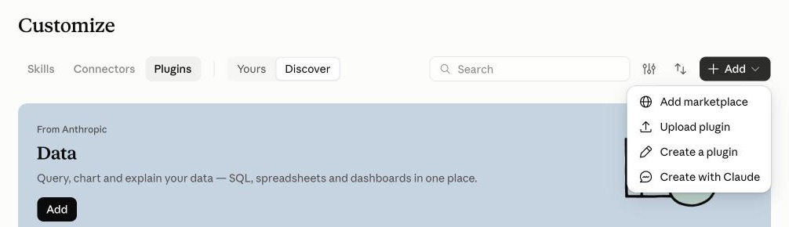
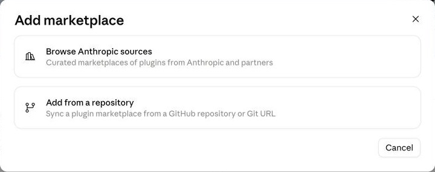
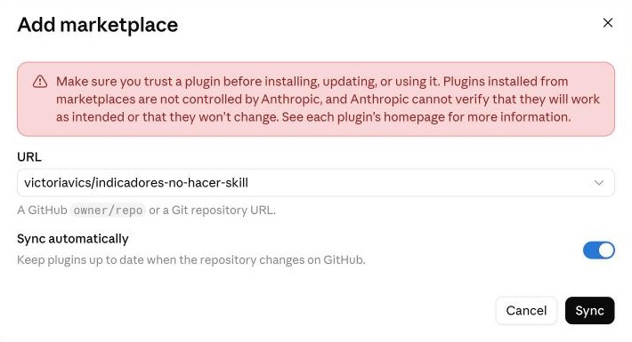
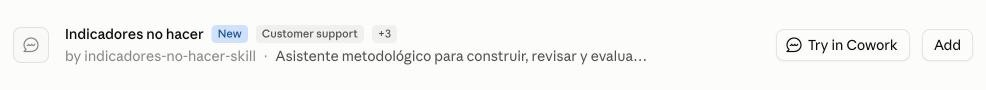
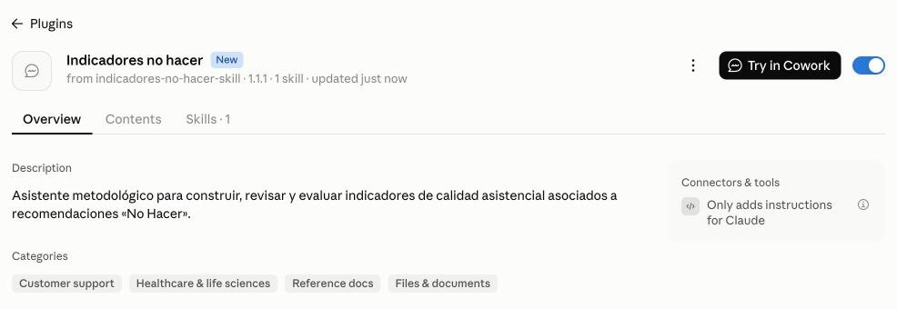
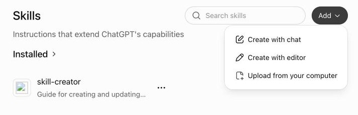

IndicadoresNo hacer
Lo que no se debería hacer también se puede medir. Un asistente para Claude y ChatGPT que convierte recomendaciones «No Hacer» en indicadores de calidad asistencial medibles y reproducibles.
No realizar la actuación en esta población, salvo estas excepciones.
- Qué no debería hacerse
- A quién se aplica
- Cuándo sí está justificado
Qué es
Recomendaciones para dejar de hacer lo que no aporta
Una recomendación «No Hacer» señala una práctica clínica que, en una situación concreta, no aporta valor al paciente: una prueba que no cambia la decisión, un tratamiento sin beneficio demostrado, un seguimiento innecesario. Su objetivo es reducir la sobreutilización y mejorar la adecuación de la práctica.
Las publican sociedades científicas y programas de calidad de todo el mundo.
Una recomendación bien escrita no es todavía un indicador. Para saber si se cumple hay que decidir qué se cuenta, a quién y con qué excepciones. Ahí empieza el trabajo metodológico.
Cómo se mide
Dos preguntas distintas sobre la misma recomendación
Una recomendación «No Hacer» se puede medir desde la actuación o desde el paciente. No siempre proceden las dos; elegir bien el enfoque condiciona todo lo demás.
Adecuación de la actuación
De todo lo que se hizo, ¿qué parte se hizo cuando debía evitarse?
Sobreutilización en población diana
De los pacientes en los que debía evitarse, ¿cuántos acabaron recibiéndola?
- Excepción
- Situación dentro del ámbito clínico en la que la actuación está justificada. No cuenta como incumplimiento.
- Exclusión
- Caso fuera de la población evaluada. Sale del numerador y del denominador.
- Aclaración
- Precisión para aplicar el indicador igual en todas partes. No es una excepción clínica.
Dos evaluadores independientes, con los mismos datos y las mismas reglas, deben clasificar igual el mismo caso.
Los 8 análisis
De la recomendación al pilotaje, paso a paso o por separado
Cada análisis funciona solo. Puedes pedir uno suelto o encadenarlos; ninguno exige haber hecho los anteriores.
Afinar la recomendación
Qué está poco definido en la actuación, la población o las excepciones.Necesita: la recomendación
Detectar errores de clasificación
Falsos positivos, falsos negativos y zonas grises.Necesita: la recomendación
Decidir cómo medirla
Si procede AA, SU, ambas u otro enfoque.Necesita: la recomendación
Construir los indicadores
De una o varias recomendaciones a una tabla de indicadores.Necesita: una o varias recomendaciones
Revisar con bibliografía
Contrastar una tabla ya hecha con fuentes clínicas.Necesita: la tabla de indicadores
Ficha técnica
Vía directa a la ficha de un indicador.Necesita: recomendación y enfoque
Ficha para panel de expertos
Documento listo para que el panel lo cumplimente.Necesita: la ficha técnica
Analizar un pilotaje
Factibilidad y concordancia entre evaluadores.Necesita: ficha técnica y datos
Al encadenar dos análisis, el asistente se detiene y resume qué quedó validado y qué quedó pendiente, para que un error no se arrastre al paso siguiente. Los resultados se entregan en Word, Excel o PDF.
Instalar
Elige dónde lo vas a usar
En la app o en la web basta con unos clics. Si trabajas en la terminal, hay un comando para cada herramienta.
¿Dónde usas la inteligencia artificial?
¿Trabajas en la terminal?
Claude
App de escritorio o claude.aiEn Claude, abre Customize en la barra lateral y entra en la pestaña Plugins. Pulsa el botón + Add, arriba a la derecha, y elige Add marketplace.

En la ventana que se abre, elige Add from a repository.

Haz clic en el campo URL y escribe esta dirección tal cual:
victoriavics/indicadores-no-hacer-skillDebajo del campo aparecerá Use "victoriavics/indicadores-no-hacer-skill": haz clic en esa opción. Después pulsa Sync y espera unos segundos.

Aparecerá Indicadores no hacer en la lista. Pulsa Add, a la derecha.

Si sale un aviso amarillo sobre Auto-sync y GitHub, ciérralo. No afecta a la instalación.
Listo. Claude muestra Indicadores no hacer is installed and ready to use y el interruptor de la derecha queda activado (en azul).

Abre un chat nuevo y escribe lo que necesitas, por ejemplo: «Te pego una recomendación «No Hacer». ¿Está suficientemente definida para medirla?». Más ejemplos.
ChatGPT
App de escritorio o chatgpt.comDescarga el archivo. No hace falta descomprimirlo.
En la barra lateral, abre Customize → Skills, pulsa Add y elige Upload from your computer.

Selecciona el zip que acabas de descargar.
Claude Code
Dentro de Claude Code, o en la pestaña Code de la app de Claude:
/plugin marketplace add victoriavics/indicadores-no-hacer-skill
/plugin install indicadores-no-hacer@indicadores-no-hacerCodex
En una terminal:
codex plugin marketplace add victoriavics/indicadores-no-hacer-skill
codex plugin add indicadores-no-hacer@indicadores-no-hacerSi usas Codex desde la app de escritorio de ChatGPT, reiníciala después.
npx skills
Claude Code, Codex, Cursor y otros a la vezNecesita Node.js. Te preguntará en qué agentes instalarlo.
npx skills add victoriavics/indicadores-no-hacer-skill -gPara instalar una versión nueva, vuelve a ejecutar el comando.
Cómo usarlo
Escribe lo que necesitas, como a un compañero metodólogo
No hay comandos que aprender. Si no dices qué análisis quieres, el asistente te enseña el menú y pregunta por dónde empezar.